QA-VISUAL-001 — Capturas antes/depois Capturas integrais do canvas no mesmo frame das métricas, incluindo HUD. Android/iPhone: emulação no Chrome; Desktop: Chrome. Cada par conserva a mesma pose e matriz da câmera.
android — apoio 0
Antes 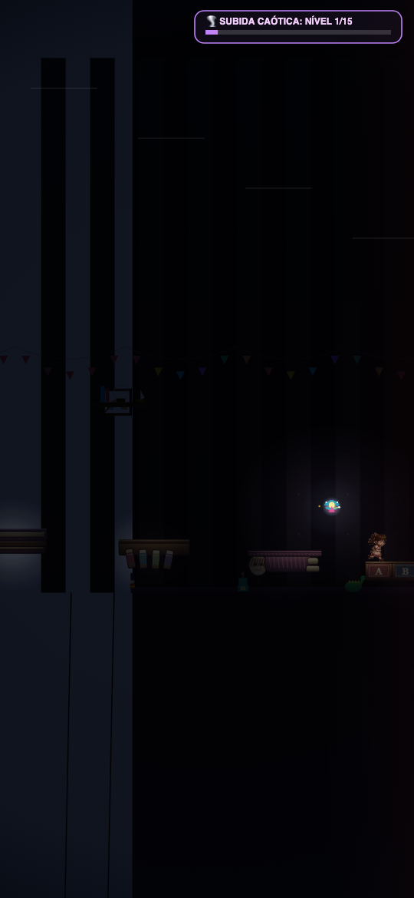
Depois 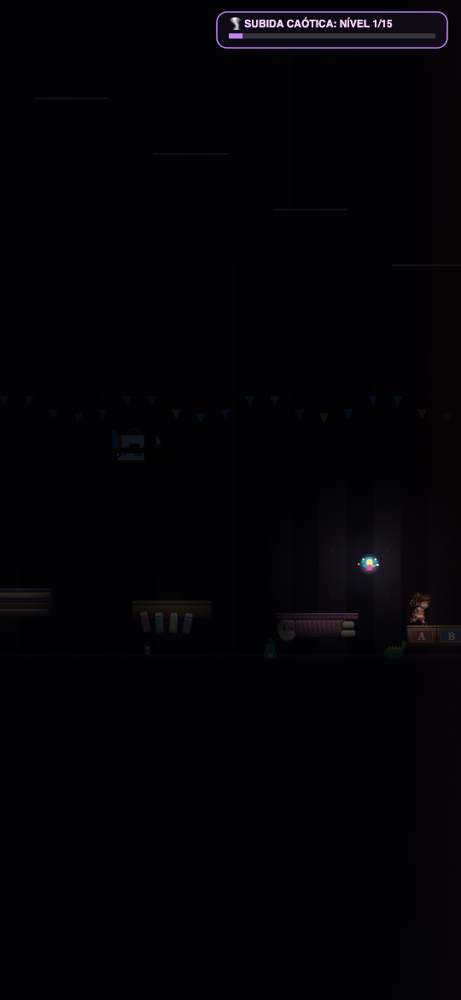
android — apoio 9
Antes 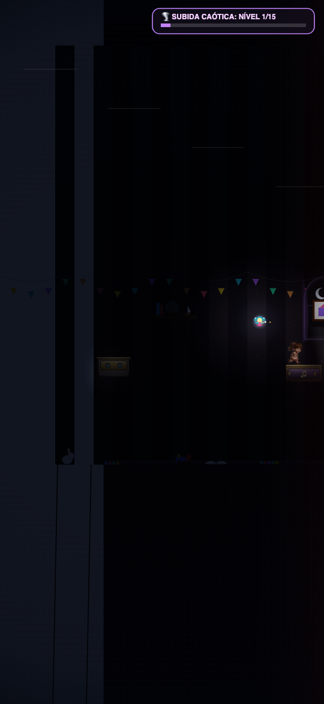
Depois 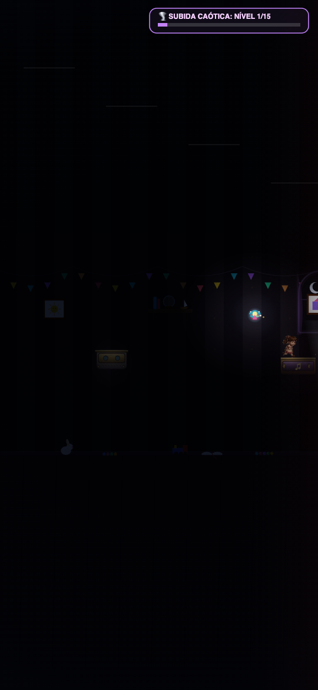
android — apoio 15
Antes 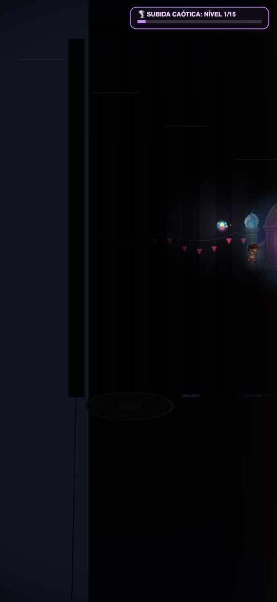
Depois 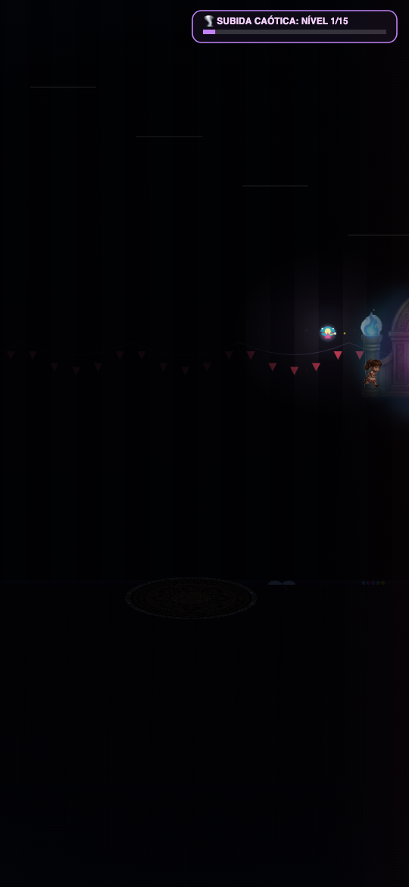
iphone — apoio 0
Antes 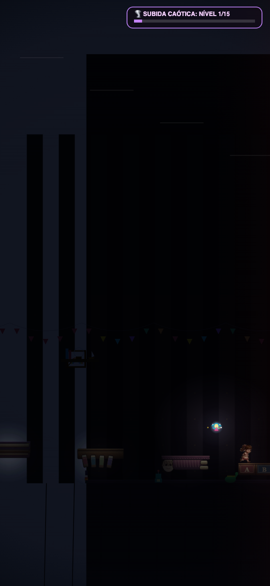
Depois 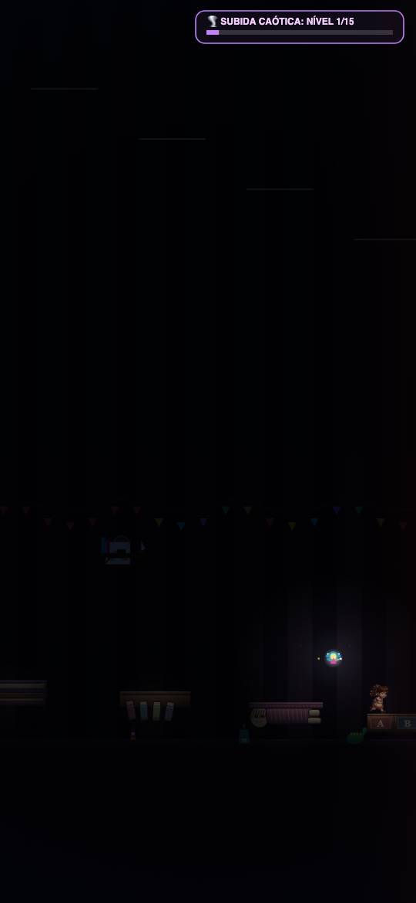
iphone — apoio 9
Antes 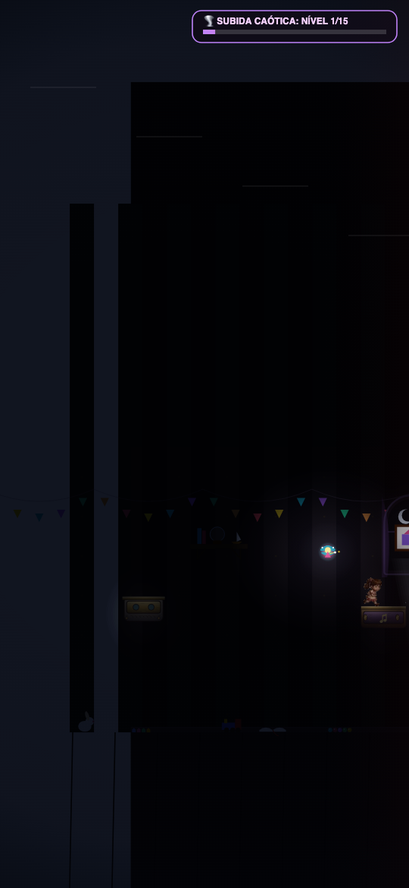
Depois 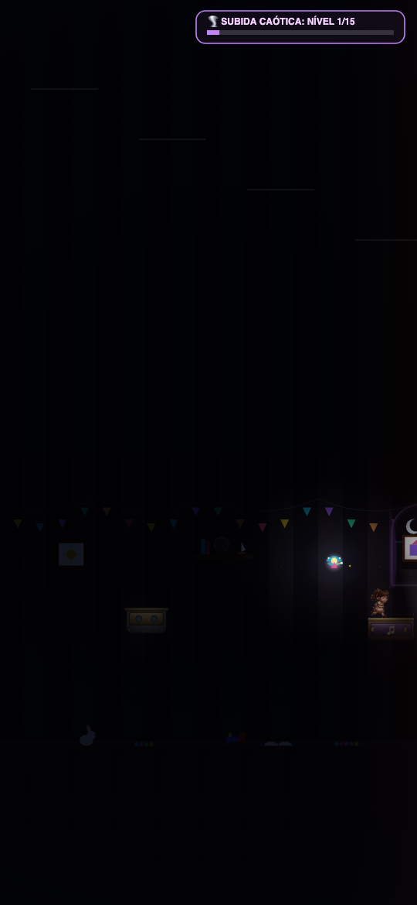
iphone — apoio 15
Antes 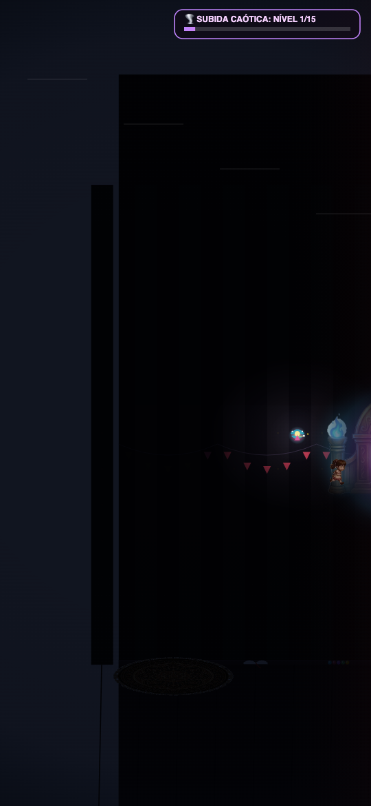
Depois 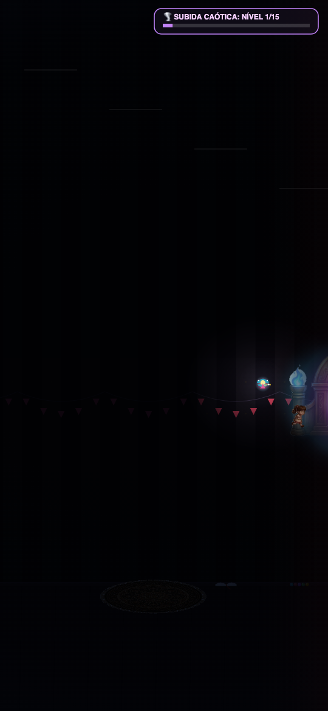
desktop — apoio 0
Antes 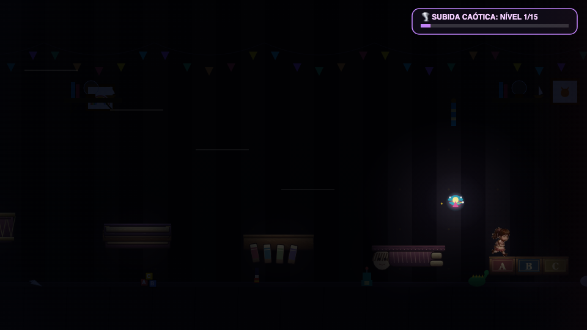
Depois desktop — apoio 9
Antes 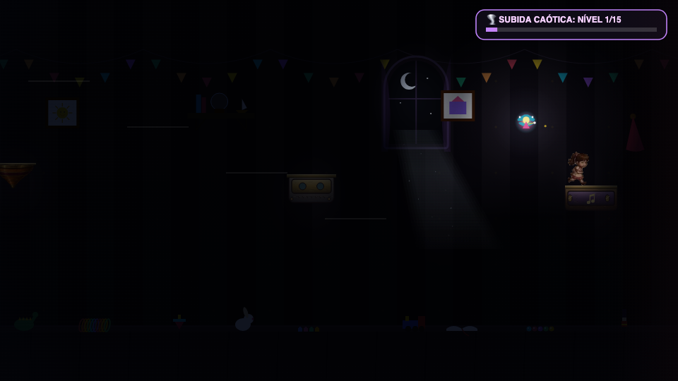
Depois 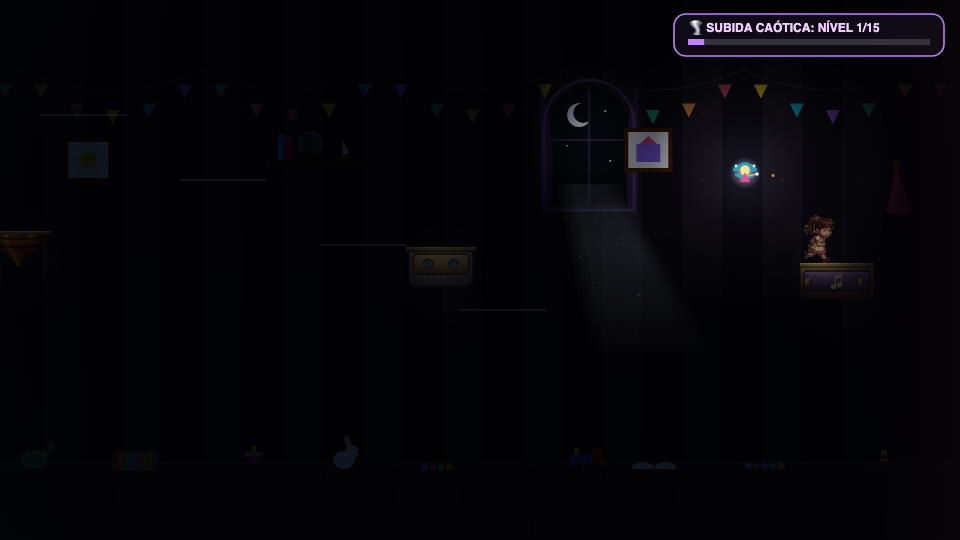
desktop — apoio 15
Antes Depois 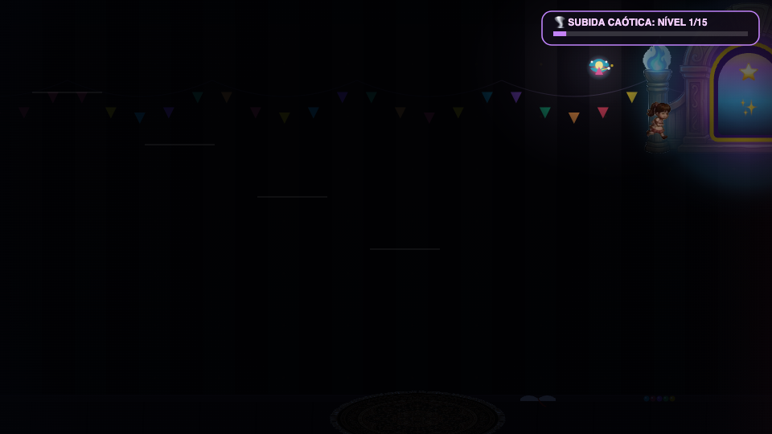
Isolamento das camadas antes da correção
Android — sem-parallax
Android — sem-sombras
Android — sem-luz-dinamica
Android — sem-background-secundario
Android — sem-vinheta
Android — sem-canvas-efeitos
Android — sem-mascara
Android — sem-pos-processamento
Android — sem-particulas
Relatório · Validação